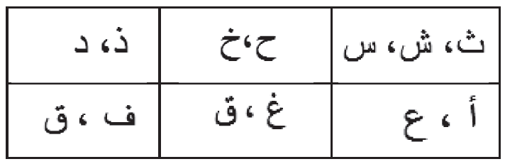

Cermati dan tirukan
Cermati dan tirukan pelafalan surah al-Falaq di atas secara berulang sampai lancar.
Insya Allah, kamu bisa!
Ayo, latihan melafalkan!
• Lafalkanlah secara berulang huruf-huruf berikut sehingga jelas perbedaannya:

Ayo lakukan secara berulang sehingga kamu dapat membaca surah al-Falaq dengan baik dan benar.